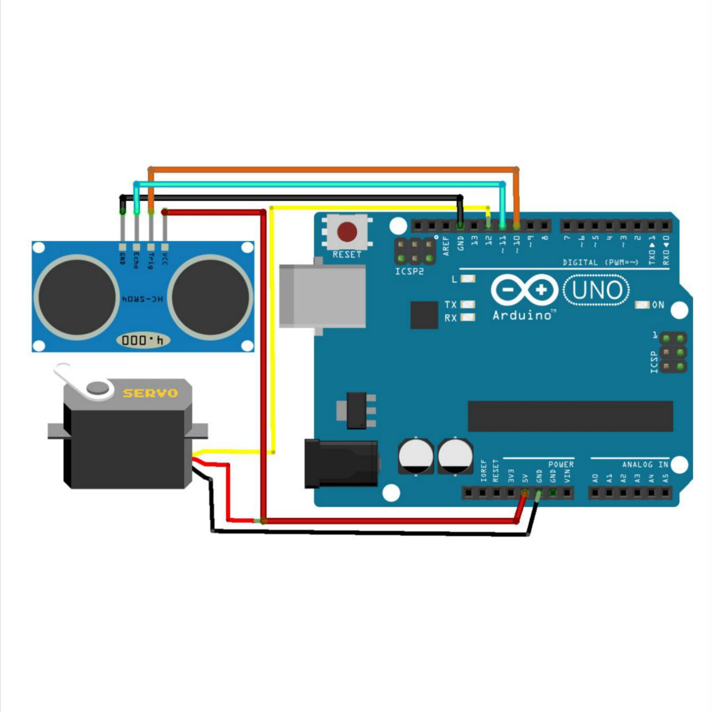

DIY Arduino radar project using an ultrasonic sensor and servo motor! Perfect for beginners learning electronics and coding.
Code for Arduino Uno
#include .
// Defines Tirg and Echo pins of the Ultrasonic Sensor
const int trigPin = 10;
const int echoPin = 11;
// Variables for the duration and the distance
long duration;
int distance;
Servo myServo; // Creates a servo object for controlling the servo motor
void setup() {
pinMode(trigPin, OUTPUT); // Sets the trigPin as an Output
pinMode(echoPin, INPUT); // Sets the echoPin as an Input
Serial.begin(9600);
myServo.attach(12); // Defines on which pin is the servo motor attached
}
void loop() {
// rotates the servo motor from 15 to 165 degrees
for(int i=15;i<=165;i++){
myServo.write(i);
delay(20);
distance = calculateDistance();// Calls a function for calculating the distance measured by the Ultrasonic sensor for each degree
Serial.print(i); // Sends the current degree into the Serial Port
Serial.print(","); // Sends addition character right next to the previous value needed later in the Processing IDE for indexing
Serial.print(distance); // Sends the distance value into the Serial Port
Serial.print("."); // Sends addition character right next to the previous value needed later in the Processing IDE for indexing
}
// Repeats the previous lines from 165 to 15 degrees
for(int i=165;i>15;i--){
myServo.write(i);
delay(20);
distance = calculateDistance();
Serial.print(i);
Serial.print(",");
Serial.print(distance);
Serial.print(".");
}
}
// Function for calculating the distance measured by the Ultrasonic sensor
int calculateDistance(){
digitalWrite(trigPin, LOW);
delayMicroseconds(2);
// Sets the trigPin on HIGH state for 10 micro seconds
digitalWrite(trigPin, HIGH);
delayMicroseconds(10);
digitalWrite(trigPin, LOW);
duration = pulseIn(echoPin, HIGH); // Reads the echoPin, returns the sound wave travel time in microseconds
distance= duration*0.034/2;
return distance;
}
Code for Processing
import processing.serial.*;
import java.awt.event.KeyEvent;
import java.io.IOException;
Serial myPort;
String angle="";
String distance="";
String data="";
String noObject;
float pixsDistance;
int iAngle, iDistance;
int index1=0;
int index2=0;
PFont orcFont;
void setup() {
size(1200, 700);
smooth();
myPort = new Serial(this,"COM4", 9600);
myPort.bufferUntil('.');
}
void draw() {
fill(0,0,255);
noStroke();
fill(0,4);
rect(0, 0, width, height-height*0.065);
fill(#0000FF);
drawRadar();
drawLine();
drawObject();
drawText();
}
void serialEvent (Serial myPort) {
data = myPort.readStringUntil('.');
data = data.substring(0,data.length()-1);
index1 = data.indexOf(",");
angle= data.substring(0, index1);
distance= data.substring(index1+1, data.length());
iAngle = int(angle);
iDistance = int(distance);
}
void drawRadar() {
pushMatrix();
translate(width/2,height-height*0.074);
noFill();
strokeWeight(2);
stroke(0,0,255);
arc(0,0,(width-width*0.0625),(width-width*0.0625),PI,TWO_PI);
arc(0,0,(width-width*0.27),(width-width*0.27),PI,TWO_PI);
arc(0,0,(width-width*0.479),(width-width*0.479),PI,TWO_PI);
arc(0,0,(width-width*0.687),(width-width*0.687),PI,TWO_PI);
line(-width/2,0,width/2,0);
line(0,0,(-width/2)*cos(radians(30)),(-width/2)*sin(radians(30)));
line(0,0,(-width/2)*cos(radians(60)),(-width/2)*sin(radians(60)));
line(0,0,(-width/2)*cos(radians(90)),(-width/2)*sin(radians(90)));
line(0,0,(-width/2)*cos(radians(120)),(-width/2)*sin(radians(120)));
line(0,0,(-width/2)*cos(radians(150)),(-width/2)*sin(radians(150)));
line((-width/2)*cos(radians(30)),0,width/2,0);
popMatrix();
}
void drawObject() {
pushMatrix();
translate(width/2,height-height*0.074);
strokeWeight(9);
stroke(255,10,10);
pixsDistance = iDistance*((height-height*0.1666)*0.025);
if(iDistance<40){
line(pixsDistance*cos(radians(iAngle)),-pixsDistance*sin(radians(iAngle)),
(width-width*0.505)*cos(radians(iAngle)),-(width-width*0.505)*sin(radians(iAngle)));
}
popMatrix();
}
void drawLine() {
pushMatrix();
strokeWeight(9);
stroke(0,0,255);
translate(width/2,height-height*0.074);
line(0,0,(height-height*0.12)*cos(radians(iAngle)),-(height-height*0.12)*sin(radians(iAngle)));
popMatrix();
}
void drawText() {
pushMatrix();
if(iDistance>40) {
noObject = "Out of Range";
}
else {
noObject = "In Range";
}
fill(0,0,0);
noStroke();
rect(0, height-height*0.0648, width, height);
fill(0,0,255);
textSize(25);
text("10cm",width-width*0.3854,height-height*0.0833);
text("20cm",width-width*0.281,height-height*0.0833);
text("30cm",width-width*0.177,height-height*0.0833);
text("40cm",width-width*0.0729,height-height*0.0833);
textSize(40);
text("ElectroFlightX", width-width*0.875, height-height*0.0277);
text("Angle: " + iAngle +" °", width-width*0.48, height-height*0.0277);
text("Distance: ", width-width*0.26, height-height*0.0277);
if(iDistance<40) {
text(" " + iDistance +" cm", width-width*0.225, height-height*0.0277);
}
textSize(25);
fill(0,0,255);
translate((width-width*0.4994)+width/2*cos(radians(30)),(height-height*0.0907)-width/2*sin(radians(30)));
rotate(-radians(-60));
text("30°",0,0);
resetMatrix();
translate((width-width*0.503)+width/2*cos(radians(60)),(height-height*0.0888)-width/2*sin(radians(60)));
rotate(-radians(-30));
text("60°",0,0);
resetMatrix();
translate((width-width*0.507)+width/2*cos(radians(90)),(height-height*0.0833)-width/2*sin(radians(90)));
rotate(radians(0));
text("90°",0,0);
resetMatrix();
translate(width-width*0.513+width/2*cos(radians(120)),(height-height*0.07129)-width/2*sin(radians(120)));
rotate(radians(-30));
text("120°",0,0);
resetMatrix();
translate((width-width*0.5104)+width/2*cos(radians(150)),(height-height*0.0574)-width/2*sin(radians(150)));
rotate(radians(-60));
text("150°",0,0);
popMatrix();
}